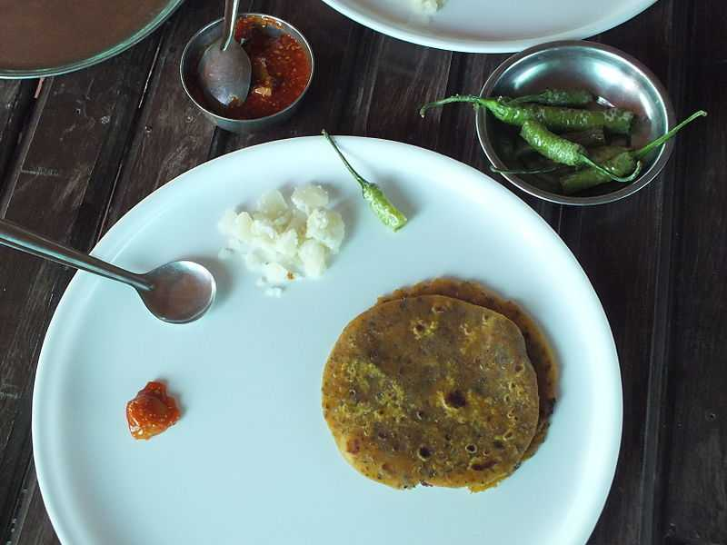
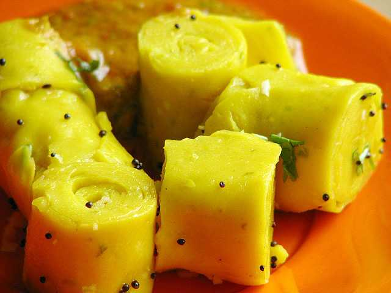

Most Popular Cuisines In GUJARAT
- Khaman (The Sponge Snack):

A tasty and healthy steamed snack made from freshly ground lentils and chickpea flour, it is very similar to its humble cousin, the world-famous -dhokla. To prepare the khaman, the khaman flour mix is boiled along with turmeric, salt and baking soda to make it light and fluffy. It is then cut up into cubes and usually garnished with mustard seeds, coriander leaves, sev and chopped onions. Traditionally served on a large green leaf called the Kesuda, the modern, urban version is served in newspapers in farsan (snack) shops with tangy chutneys and several pieces of green chillies. Popular adaptations of the khaman include Ameri khaman (mashed up khaman garnished with sev and pomegranate), Nylon khaman (softer and fast-cooking khaman) and Masala khaman (khaman served with hot and spicy chilly powder)
- Thepla (A snack that every Gujarati Swear by!):

No Gujarati journeys, picnics, foreign trips or even business trips are complete without this ubiquitous snack. Made from gram flour, whole wheat flour, fresh fenugreek leaves and spices, these flatbreads are healthy snacking options with a long shelf life. Usually served piping hot with fresh curd, pickles or chundo, they make wholesome meals. When accompanied by a cup of steaming hot tea, they also make a sumptuous breakfast or a great snack during the monsoon. Although the methi (fenugreek) ones are the most common, other varieties include palak (spinach), amaranth or muli (raddish) theplas-specially recommended for fussy eaters.
- Undhiyu (The Winter Delicacy):
The king of Gujarati dishes Undhiyu (and of course Uttarayan) is the reason why a Gujarati eagerly awaits winter. It derives its name from the Gujarati word undhu, meaning inverted, it is a classical Gujarati dish made in an inverted clay pot. It is a special winter delicacy made from the choicest of fresh produce readily available in winter. Common ingredients include eggplant, crunchy muthiyas (fried chickpea flour dumplings), potatoes, yam, green peas, bananas and beans, slow-cooked to perfection with buttermilk, coconut and spices. Undhiyu served with puris and shrikhand is a common occurrence during Gujarati weddings.
- Khandvi (The delectable Gujarati Naashta):

Thin layers of gram flour cooked with buttermilk and rolled up in mushy goodness, seasoned with sautéed sesame seeds and a few other spices, that's khandvi for you. The simple but aromatic garnishing of curry leaves, coriander, sautéed cumin, mustard and coconut makes it simply irresistible. Also called 'suralichya wadya' in Maharashtra, it is a popular snack among Gujaratis and Maharashtrians alike. Although loved by all, no one can deny that this dish is a little tricky to cook, especially getting the consistency of the batter right. Light on the stomach and pleasing on the tongue, khandvi can be a perfect breakfast item or a delectable evening snack.
- Fafda-Jalebi (The Dream Cheat Day Breakfast!):
Made hugely popular by the daily soap 'Taarak Mehta ka Ulta Chashma'?, this is (almost) every Gujarati's dream cheat-day breakfast. Fafda is a crunchy, fried chickpea flour snack, jalebi is a sweet deep-fried pretzel made of wheat flour and dipped in sugar. Together, they are a match made in heaven. When you take a piece of the crunchy, salty, spicy fafda and eat it with a piece of the crunchy, sweet jalebi, you are sure to be in food heaven. Have a fried chilly or a whip of the dry papaya chutney with this combination, and your taste buds will burst away to glory. Almost every street corner in Gujarat, esp. Ahmedabad has a shop selling these. On Sundays, there are huge queues outside farsan shops, for an indulgent breakfast of this heavenly duo.
And Much Much More!!!!!!!